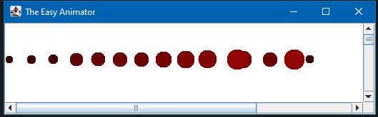
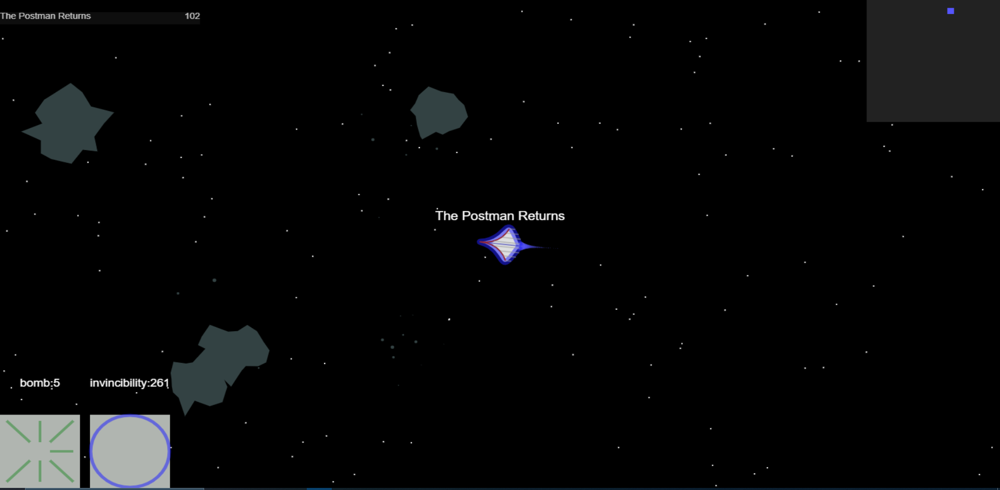
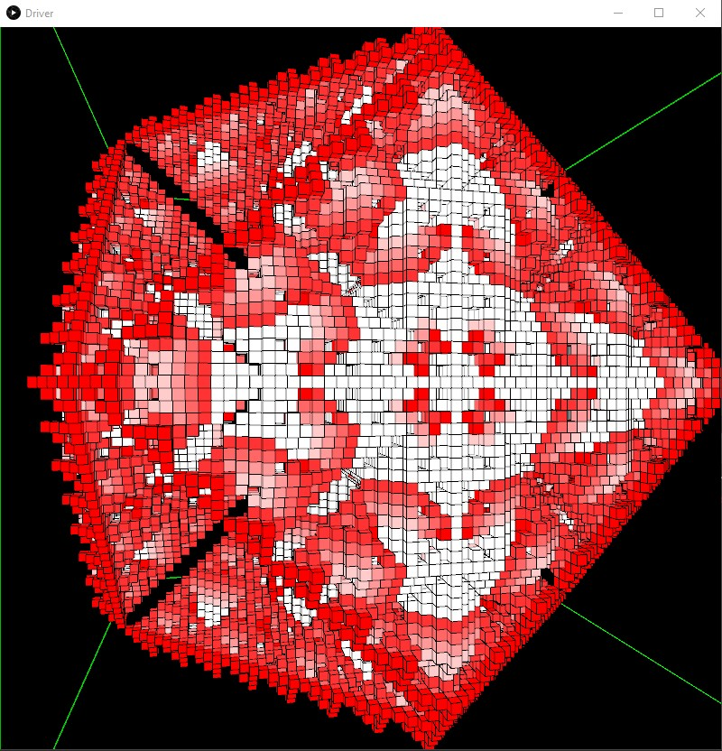
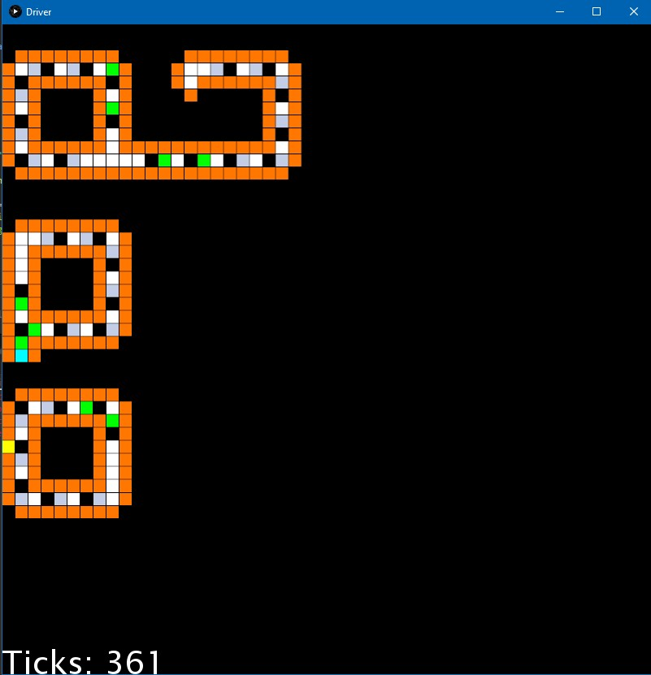

Tabletop RPG Helper IP
Built to help players of tabletop RPG games keep track of NPCs, locations, and other information that comes up in a DND-type game. Tracks relationships between these things and screens to view relevant information all in one place. Not currently hosted anywhere.

The Easy Animator
A simple animation software written in java using swing. Reads in descriptions of animations from a text file, and can output an SVG describing the animation or play a visual representation of the animation.
Space Fighters
Multiplayer spaceship game with powerups inspired by the Atari game 'Asteroids'. Built in javascript and typescript, using websockets. No longer hosted anywhere after Heroku ended free plans.
Client code and server code live in different repositories for this project.
Generic Cellular Automata
This project is a program which can run any cellular automata, given it's set of rules. The most famous automata is probably Conway's Game of Life. Generally, for the purposes of this program, a cellular automata is a set of cells which can each be in some state from a finite set of states, and they can transition from that state into another state based on their own state and the state of their neighbors. We created 1D, 2D, and 3D cellular automata examples in the repository; rules are specified in JSON. The one that runs is the one labeled 'startup.json'.
 
'Hackarona' Drink Catalog
Built as part of an AWS sponsored hackathon for Constellation Brands interns. This was a django website which gave cocktail recommendations based on which ingredients and Constellation products you owned. We allowed users to take photos of constellation products, and we would determine which product it was, and suggest recipes based on it. One of the goals was to use AWS services, so we hit as many as we reasonably could along the way; we ran the app on an EC2, we stored user images in S3 buckets, and we ran AWS lambdas to process the photos with AWS Textract, and finally logging to AWS cloudwatch. There was an existing collection of recipes that Constellation had put together, which we used. This website won Crowd Favorite at the hackathon.